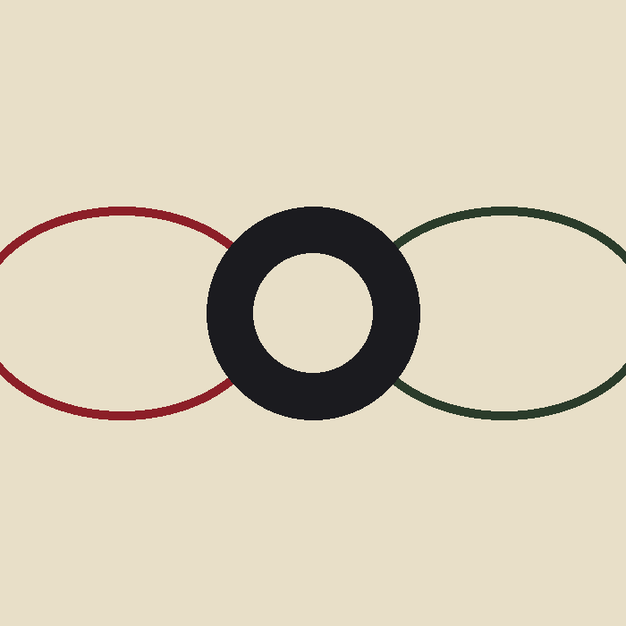

Неге мен «Shingeki no Kyojin» аниместерін тамашалаймын
Бұл сайтты мен өзімнің сүйікті анимем — «Shingeki no Kyojin» («Титанның шабуылы») туралы жасадым. Бұл жоба HTML пен CSS негіздерін меңгеру тапсырмасы аясында дайындалды, бірақ мазмұны толығымен нақты аниме әлеміне негізделген.
Неге бұл тақырыпты таңдадым
Бұл аниме адамзаттың бостандық үшін күресін, күрделі кейіпкерлерін және атмосфералық анимациясын байланыстыратындығымен ерекшеленеді. Мен түпнұсқа жапон дубляжымен көруді жөн көремін, себебі дауыстық актерлердің эмоциясы сол күйінде жеткен дұрыс деп есептеймін.
Бұл сериалды ұнатуымның бірнеше себебі бар:
- Күрделі, көп қабатты сюжет құрылымы
- Оқиғаның саяси және философиялық тереңдігі
- Титан жаулары мен ODM жабдығымен ұрыс көріністерінің сапасы
- Кейіпкерлердің ұзақ мерзімді дамуы
Сайтпен қалай жұмыс істеу керек
Жоғарыдағы навигация арқылы серия туралы толығырақ ақпаратты («Аниме туралы» беті) немесе маусымдар кестесі мен байланыс формасын («Кесте және байланыс» беті) көре аласыз.
Сайтта не бар екенін мына тәртіппен қарап шығуға болады:
- Осы басты бетте сериалды таныстыру
- «Аниме туралы» бетінде оқиға желісі мен фактілер
- Маусымдар кестесі мен пікір қалдыру формасы
Барлау корпусының белгісі
Серияда әр әскери бөлімнің өз рәмізі бар. Төменде — Барлау корпусының қанаттар белгісі, бостандыққа деген ұмтылысты білдіреді.
